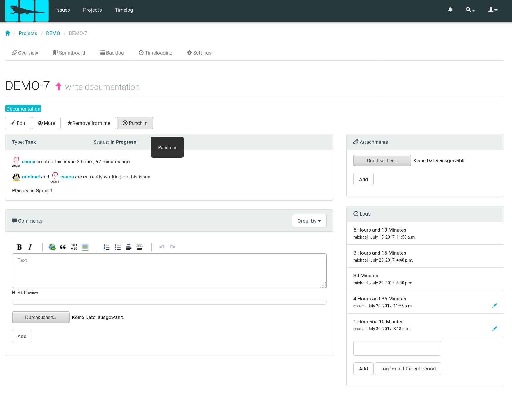
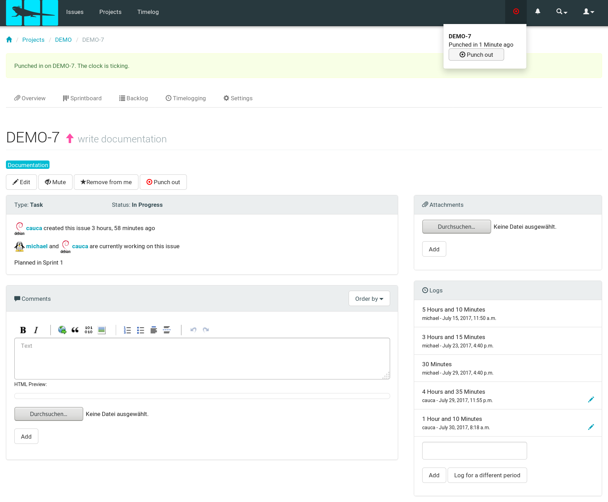
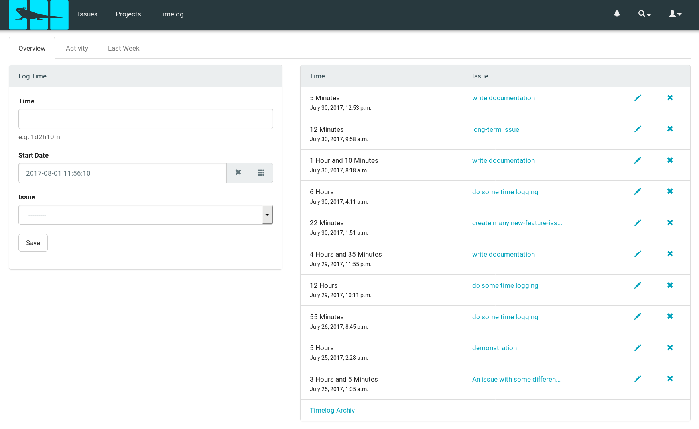
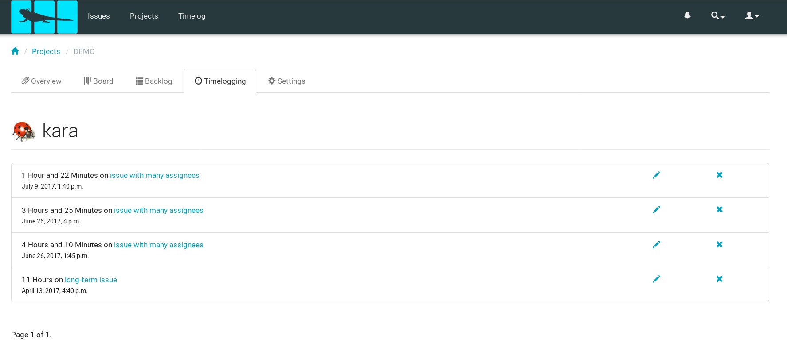
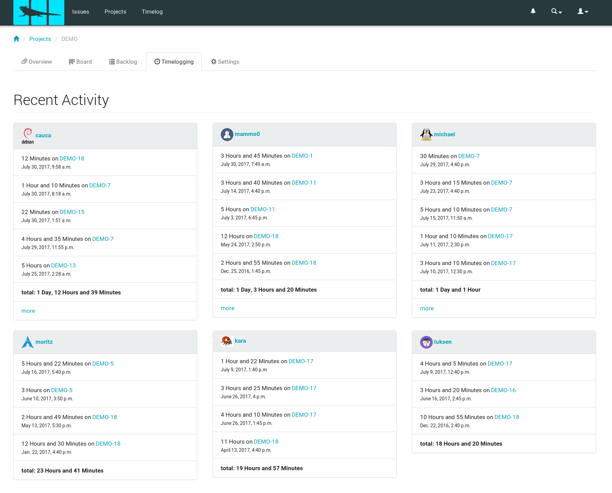

Iguana is an open source issue management system with a kanban board, sprint planning
and time logging features, and anything else you need to make working on a project in groups pleasant.
Whenever it is necessary to log some time for different types of subjects, this is possible in iguana in a very comfortable way. Furthermore some features give a handy overview about when did one work on which issue.
Log time
Depending on what do you want to log time for iguana provides different interfaces to minimise the necessary number of interactions.
Log time for an issue and punch in/out
Log time for a specific issue is possible from it's detail-view. Either via the log-field where it is also possible to log for a different period of time, or even more comfortable to log the time immediately via the punch in and punch out fields. Of course using the olea-bar is also a possible way to do so.


Log time for own issues
To log time for issues you are assigned to, independent from the relative project, the general time log view is helpful.

Overviews
Log list
Beside the list of time logs listed in your personal time seen above, they are also listed in the log page of the project, where the shown information depends on whether you are a developer or a manager. Because as a developer you are not able to see the logs of others, as manager this is possible.


Chart
There is also a nice chart that show time logs over a period of time for all or a specific project and the individual colours visualise the different issues in there, that can be read by hover over those bars.